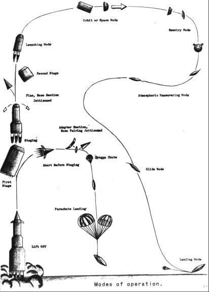

On 1 April 1959, NASA Headquarters called for representatives from its field centers to serve on a Research Steering Committee for Manned Space Flight, headed by Harry Goett, an engineering manager at Ames who became Director of the new Goddard center in September. Goett and nine others* began their deliberations in Washington on 25 May. Milton W. Rosen, NASA Chief of Propulsion Development, led off with a report on the national booster program. Next, representatives of each center described the status of work and planning toward man-in-space at their respective organizations.17
Laurence K. Loftin, Jr., said that 60 percent of Langley's effort pertained to space and reentry flight research; Maxime A. Faget, of the Space Task Group, discussed Mercury's development. Alfred J. Eggers, Jr., told the group what Ames was doing and then advocated that NASA's next step be a spacecraft capable of flying two men for one week, with enough speed to escape the earth's gravitational pull, fly to the moon, orbit that body, and return to the earth.
Bruce Lundin described propulsion and trajectory studies under way at Lewis and warned against "setting our sights too low." As Glennan and Dryden had done, Lundin took a broad view of space exploration, reminding the committee that a manned lunar landing was merely one goal, leading ultimately to manned interplanetary travel.
It was apparent that NASA leaders intended to aim high. Faget, one of the inventors of the Mercury capsule, and George Low urged manned lunar landings as NASA's next objective. Low stressed study of ways to perform the mission, using several of the smaller Saturns in some scheme besides direct ascent to avoid total dependence upon the behemoth that Nova might become. The Goett Committee then recorded its consensus on the priority of NASA objectives:
A primary reason for this choice was the fact that it represented a truly end objective which was self-justifying and did not have to be supported on the basis that it led to a subsequent more useful end.19
At this meeting, the Goett Committee members compared direct ascent with rendezvous in earth orbit. At Low's request, John H. Disher first reviewed the sizable activity at Huntsville. In February 1959, the Department of Defense had announced that development of the 5,800-kilonewton (1.3-million-pound-thrust) rocket had been designated Project Saturn. Less than six months later, Disher reported, the von Braun group already had its sights set on a Saturn II (a three-stage version with an 8,900-kilonewton [2 million-pound-thrust] first stage) and rendezvous in earth orbit, even working on some modes that called for refueling in space. Von Braun's team was also studying a Nova-class vehicle for direct ascent.
Lundin then made some disquieting comments. For direct flight to the moon, propulsion needs were staggering. Even with cryogenic propellants in the upper stages of the launch vehicle, the combined weight of rocket and spacecraft would be about 4,530 to 4,983 metric tons - a formidable size. He also noted that prospects for earth-orbital rendezvous seemed little brighter; such a procedure (launching more than a dozen Saturn-boosted Centaurs to form the lunar vehicle) required complex rendezvous and assembly operations. Lundin ticked off several areas that would need further study, regardless of which mission mode was chosen: cryogenic storage in space, a throttleable lunar-landing engine, a storable-propellant lunar-takeoff engine, and auxiliary power systems.** 20
On 8 and 9 December 1959 at Langley, Goett's group met for the third (and apparently last) time. The main discussions centered on lunar reentry heat protection, all-the-way versus assembly-in-orbit, parachute research, environmental radiation hazards, and the desirability of or necessity for a manned orbiting laboratory. Most of the field center studies were predicated on a two-man, 14-day circumlunar flight, boosted by some sort of Saturn vehicle and protected by ablative shielding. Very little specific thought, however, had been given to the actual lunar landing.21

Using a lenticle-shaped spacecraft for a reentry vehicle.
Opinion within the committee on what NASA's next (as opposed to its long-range) program should be had been far from unanimous, however. Langley, which by this time had begun extensive studies of space station concepts and related problems including rendezvous, strongly favored earth-orbital operations.*** Faget was allied with Langley, because the Space Task Group was greatly concerned about the unknowns in lunar operations, especially radiation. But Goett and Low remained unswerving in their advocacy of lunar flight. They insisted that the technology for flying to the moon could be applied to near-earth missions, but not vice versa. Indeed, Low perhaps more than any other pushed for landing rather than just circumlunar flight, but neither the committee as a whole nor the chairman was willing to go that far. "In fact," Low later said, "I remember Harry Goett at one time was asked, 'When should we decide on whether or not to land on the moon? And how will we land on the moon?' And Harry said, 'Well, by that time I'll be retired and I won't have to worry about it.' "22
Although the time had come for someone in authority to start making the decisions that could lift the moon mission out of the realm of research and start it on the path toward development, Glennan could not commit the agency to any specific long-range programs, especially lunar flight. Knowing that the President's intent to "balance the budget, come hell or high water," would preclude anything beyond Project Mercury just then, Glennan bided his time. Without executive approval, NASA could only continue its studies and wait for a more propitious moment.23
* Goett's committee consisted of Alfred J. Eggers, Jr. (Ames), Bruce T. Lundin (Lewis), Loftin (Langley), DeElroy E. Beeler (High Speed Flight Station), Harris M. Schurmeier (JPL), Maxime A. Faget (Space Task Group), and George M. Low, Milton B. Ames, Jr., and Ralph W. May, Jr., secretary (Headquarters). Ames was a part-time member.
** Cryogenic fuels are corrosive and are difficult to store for any length of time because of the low temperatures required to maintain the proper state of the oxidizer - in this case, liquid oxygen. This fuel, moreover, requires the extra complication of an igniter to fire it. A throttleable engine is one that can be started and stopped as needed. Storable propellants are hypergolic fuels that ignite on contact with the oxidizer, demand no special temperature controls, are not corrosive, and can remain in storage indefinitely. The power systems Lundin talked about were fuel (or solar) cells that could generate the electrical energy needed on long flights without the weight penalties attached to the more conventional batteries used in Mercury.
*** On the instigation of E. C. Braley and Loftin, Langley had held a conference on 10 July 1959 to study the aspects of placing a manned space laboratory in operation. This project was seen as a step to the eventual landing of a man on the moon in 10 to 15 years.
17. John W. Crowley, Jr., to Ames, Lewis, and Langley Research Centers and to High Speed Flight Station, "Research Steering Committee on Manned Space Flight," 1 April 1959; Crowley to Jet Propulsion Laboratory, subj. as above, 8 April 1959; Ralph W. May, Jr., secy., minutes of meeting of Research Steering Committee on Manned Space Flight, 25-26 May 1959.
18. May, minutes, Research Steering Committee, 25-26 May 1959.
19. May, minutes of meeting of Research Steering Committee, 25-26 June 1959; Harry J. Goett to Ira H. A. Abbott, "Interim Report on Operation of 'Research Steering Committee on Manned Space Flight,'" 17 July 1959.
20. U.S. Army Ordnance Missile Command news release, 12 Feb. 1959; May, minutes, Research Steering Committee, 25-26 June 1959.
21. May, minutes of meeting of Research Steering Committee, 8-9 Dec. 1959.
22. Goett, interview, Palo Alto, Calif., 26 June 1968; George M. Low, interviews, Washington, 1 May 1964, and Houston, 7 Feb. 1967; Beverly Z. Henry, Jr., to Assoc. Dir., Langley, "Langley Manned Space Laboratory Effort," 5 Oct. 1959.
23. Goett and Low interviews; Dwight D. Eisenhower to Swenson, 5 Aug. 1965.